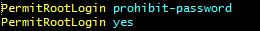
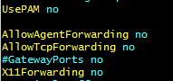
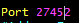
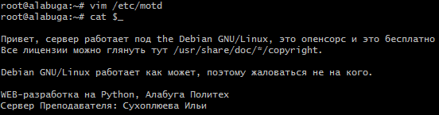
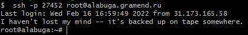
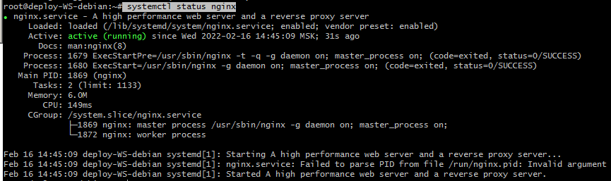

202202161406 подготовка VM для тестирования WorldSkills
Настройка сервера SSH
Стоит тестировать SSH-подключение без отключения SSH-соединения. Так как при ошибки конфигурации вы можете потерять доступ по SSH.
- Конфигурационный файл:
/etc/ssh/sshd_config - Только не забываем скопировать и проверить ssh-ключи (
ssh-copy-id)  2. systemctl reload sshd- После того, как перепроверим, что всё работает сменим TCP-порт 
Настройка сообщения входа
/etc/motd- Установка
fortune apt install fortune-mod fortunes-ru fortunesecho "/usr/games/fortune" >> /etc/bash.bashrc- 
Генерация списка студентов и паролей
bash
for i in `seq 1 24`; do
echo "std${i}";
(tr -dc A-Za-z0-9 </dev/urandom | head -c 13 ; echo '') > "std${i}_password".txt
done > students.txt
head students.txt
std1
std2
std3
std4
std5
std6
std7
std8
std9
std10
Создание Пользователей для Участников WS
bash
for i in `seq 1 24`; do
/usr/sbin/useradd -m "std${i}"
cat "std${i}_password".txt "std${i}_password".txt | passwd "std${i}"
done
Установка и настройка nginx
bash
apt-get install nginx
systemctl status nginx

TODO: Настройка nginx для Module1 (Django/Python)
Настройка nginx для Module2 (HTML/JS)
``bash
echo "" > /etc/nginx/sites-enabled/jan.ws.conf
for i inseq 1 24`; do
cat >> /etc/nginx/sites-enabled/jan.ws.conf <<HERE
server {
listen 80;
listen [::]:80;
server_name std${i}.gramend.ru;
root /home/std${i}/jan/module1;
index index.html;
location / {
try_files \$uri \$uri/ =404;
}
} HERE done ```